Case Study
ATLAS PSU
A live system that assigns faculty teaching loads for College of Sciences chairpersons at Palawan State University, using CP-SAT and a genetic algorithm. 1st Place, Most Innovative Study, and Best Presenter.
Recognition
4th PAL-SU IT Department UI/UX Design Case Study Competition, November 9, 2026
At a Glance
- Role
- Team leader, backend and optimization engine, full-stack
- Status
- Live
- Stack
- Python / Flask, CP-SAT, Genetic Algorithm, PostgreSQL (Supabase)
- Hosting
- Render (web app), Supabase (database)
Problem and Context
Department chairpersons assign faculty teaching loads by hand. At Palawan State University's College of Sciences, that work spans several departments: IT, CS, Marine Biology, Medical Biology, and Environmental Science.
ATLAS PSU covers faculty-taught courses only. It was built from April to July 2026, and the final case study paper was submitted on November 4, 2026. It is designed for privacy: no student personal data, no stored passwords of our own, no IP tracking, and no leave reasons.
How It Works
A CP-SAT constraint model builds feasible schedules under hard rules: rooms, blocks, and faculty availability and leave. A genetic algorithm then improves balance across faculty.
Chairpersons work on a Monday to Saturday 30-minute timetable grid with drag and drop. Runs can be saved and approved, and timetables can be printed or exported to Excel, with reports alongside.
The System
Access is role based (chairperson, faculty, admin) with department-scoped data and an audit log. Data lives in Supabase PostgreSQL, with an RPC function protecting faculty reads. An admin Test Lab monitors CP-SAT, genetic algorithm, and validation runs live.
Stack
| Languages | Python (Flask backend), vanilla JavaScript (frontend), SQL (PostgreSQL schema, seed and reset scripts, RPC functions) |
|---|---|
| Optimization | CP-SAT constraint programming (Google OR-Tools solver), genetic algorithm |
| Database | PostgreSQL on Supabase, with an RPC function protecting faculty data reads |
| Auth and security | Real logins, role-based access by department (chairperson, faculty, admin), audit log |
| Hosting | Render (web app), Supabase (database) |
| Tooling | pytest, Git branching with rollback tags, Figma (UI proposal), PWA manifest (installable), Excel and printable timetable export |
Screens
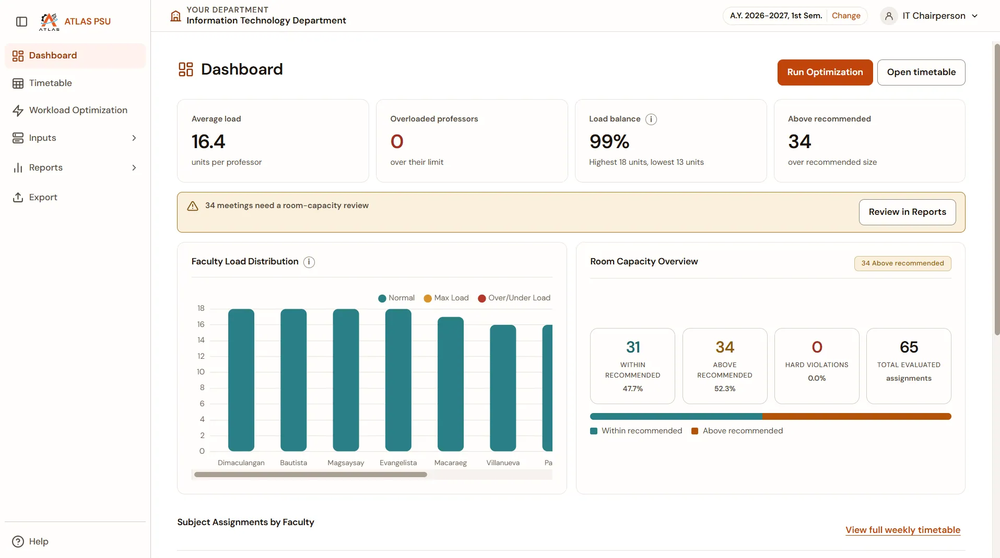
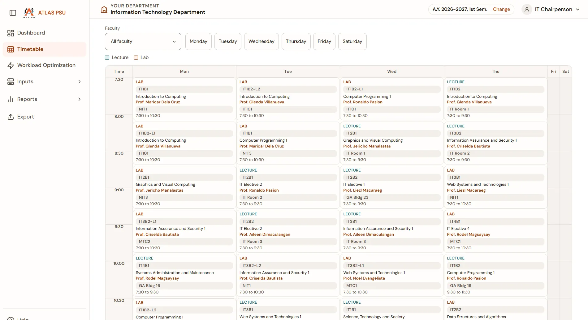
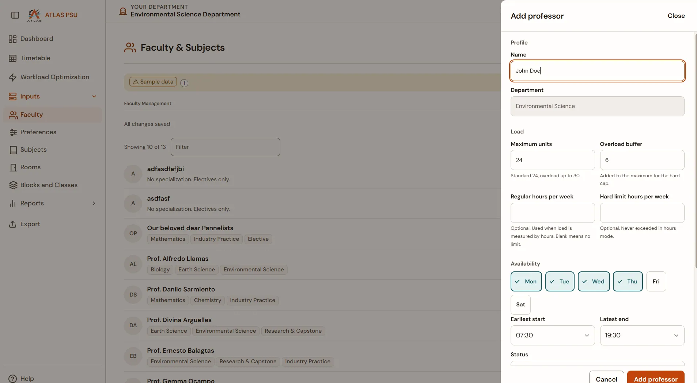
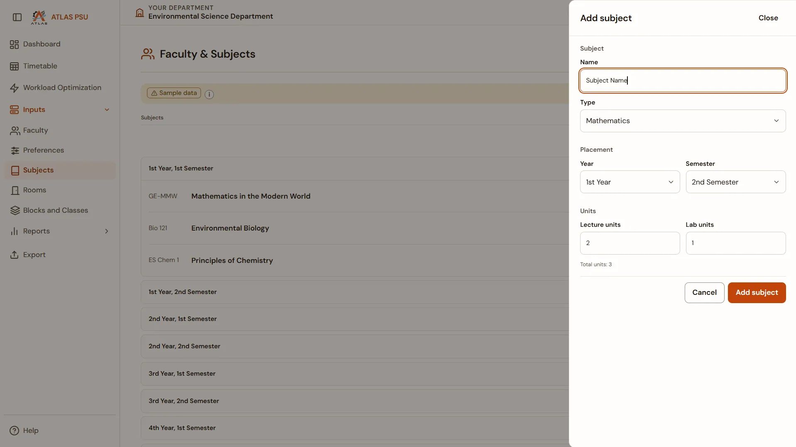
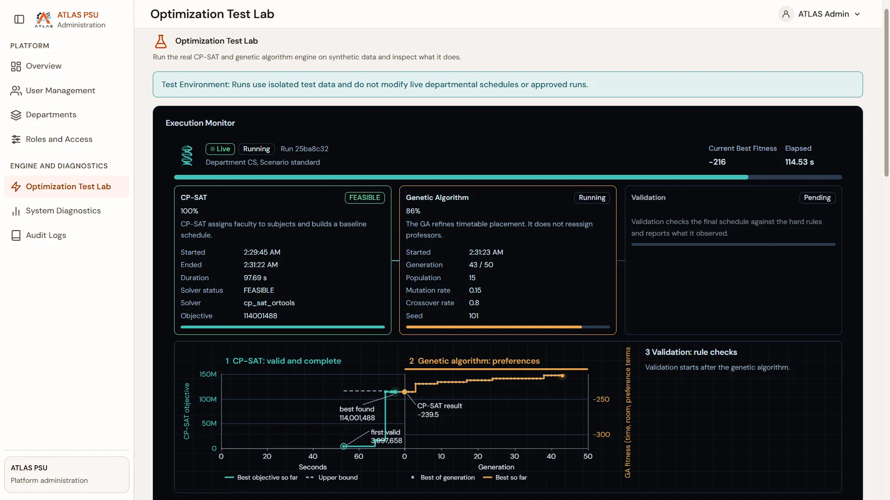
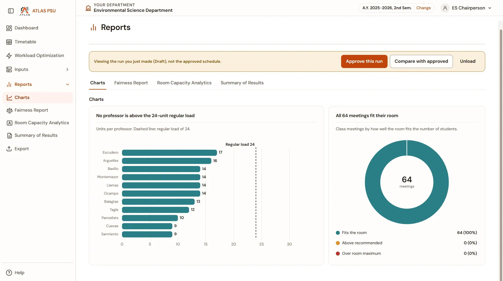
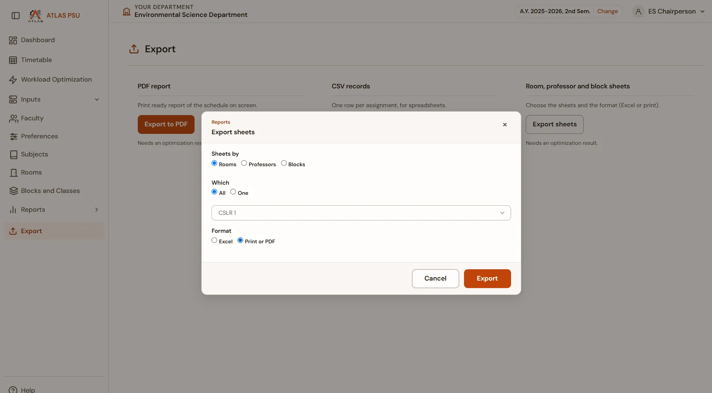
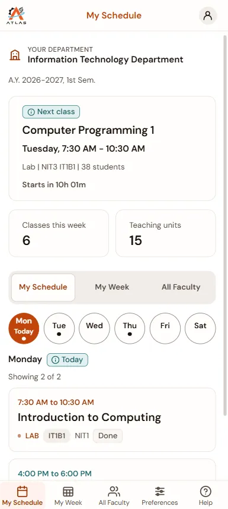
The Event
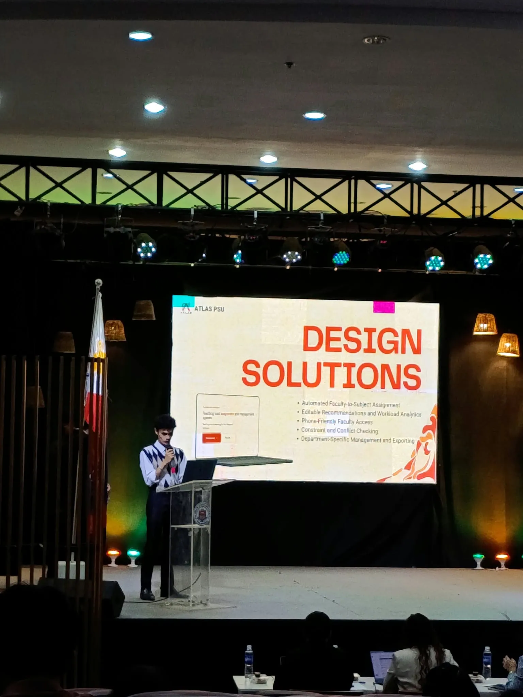
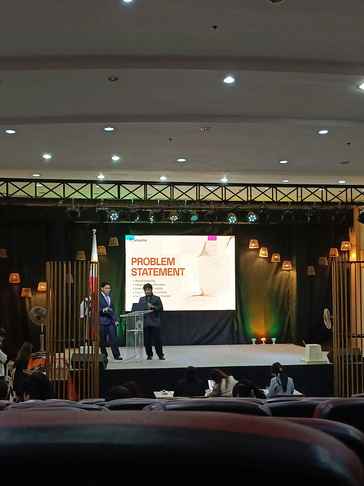
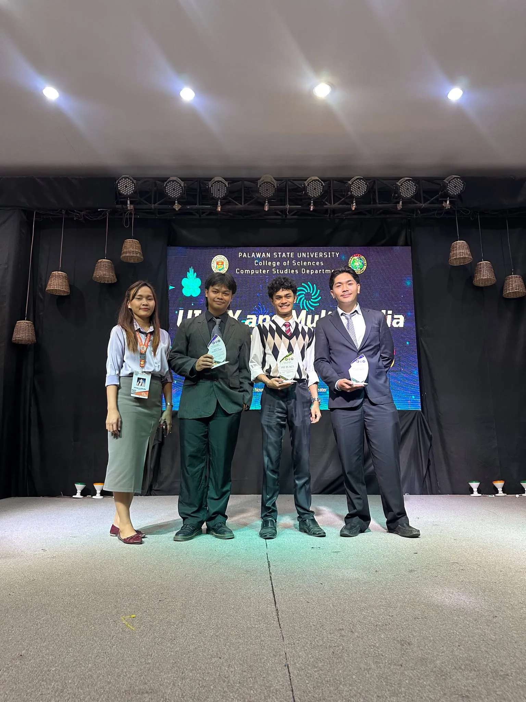
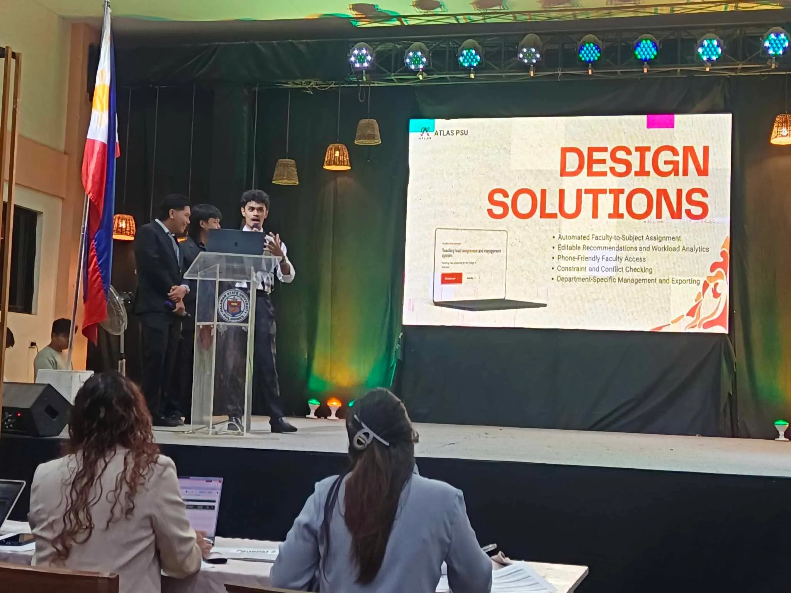
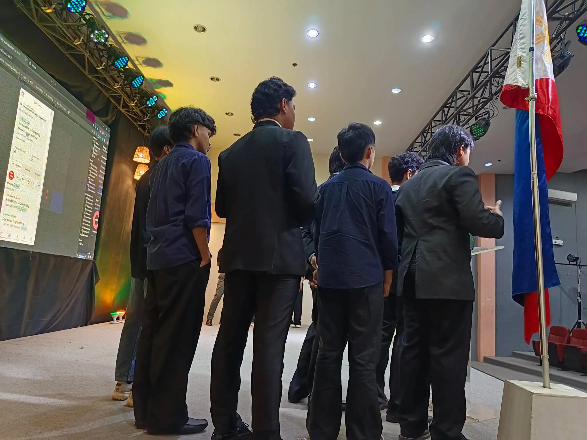
The Team
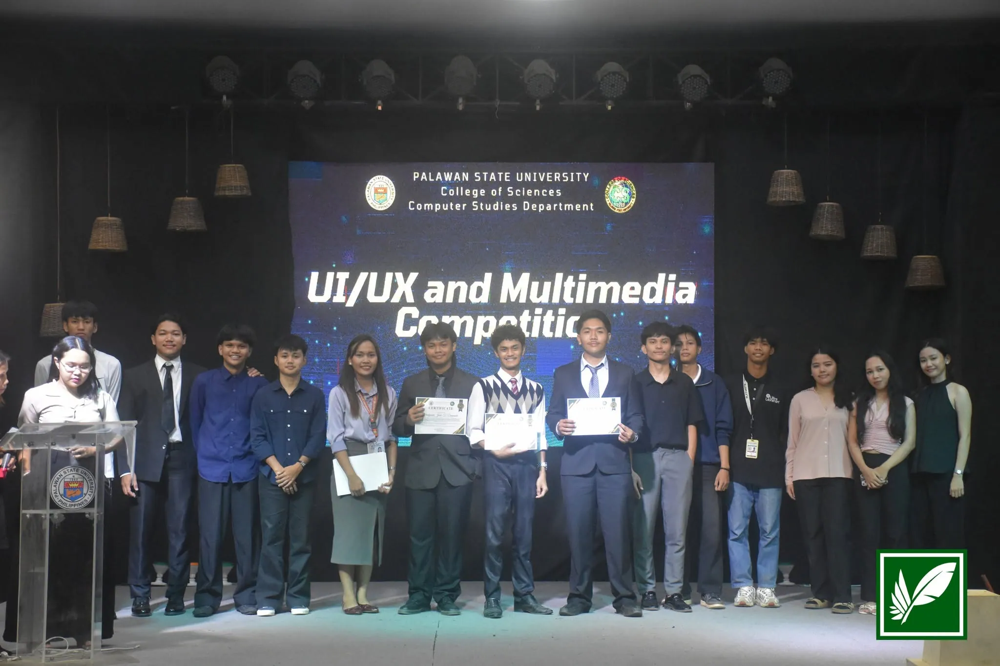
- Arthur Baldosano Jr. Team leader, backend and optimization engine, full-stack
- Jestone Jaranilla Co-programmer and presenter
- VJ Diamante Co-programmer and presenter
Research team
- R. Camacho
- J. Bantillo
- E. Tragico
- J. Rovalo
- R. Ortega
- R. J. Torres
- A. L. Jalane
- Z. Zambales
- J. A. Ferrer
- G. E. Aumenta
Published Paper
Baldosano Jr., A., Diamante, V., Jaranilla, J., Camacho, R., Bantillo, J., Tragico, E., Rovalo, J., Ortega, R., Torres, R. J., Jalane, A. L., Zambales, Z., Ferrer, J. A., & Aumenta, G. E. (2026). ATLAS PSU: A Teaching Load Assignment and Management System for Department Chairpersons of the College of Sciences at Palawan State University. Zenodo. https://doi.org/10.5281/zenodo.24479345
Honest Limitations
Not every chairperson was interviewed. A faculty survey was not pursued. The faculty-side design rests on chairperson accounts.
Access
Sign-in required. Request demo access by email at arthurjuniorbaldosano@gmail.com.
First load can take up to a minute while the server wakes.